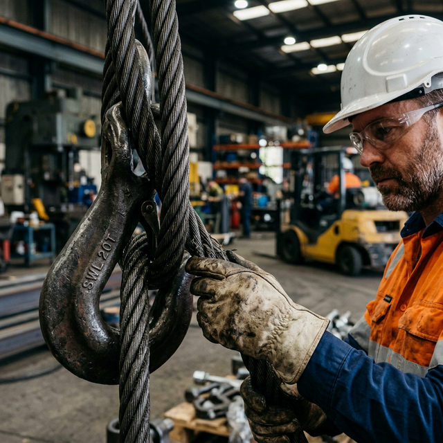
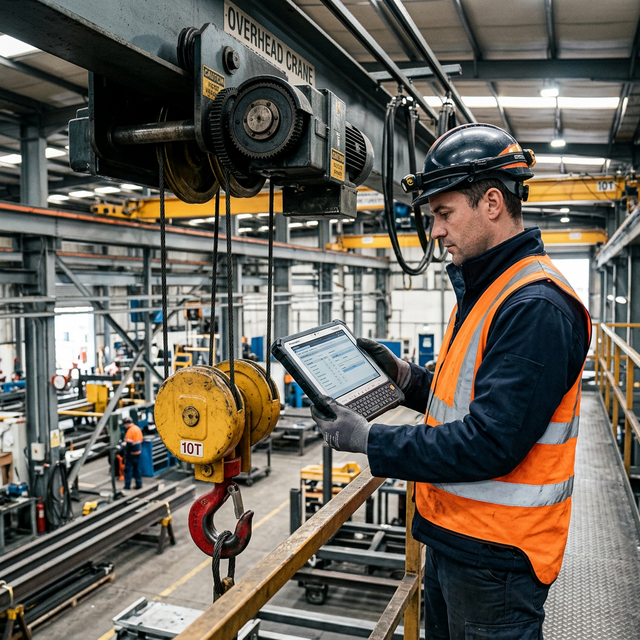

The Strategic Guide to Overhead Crane Maintenance: Maximizing Uptime, Safety, and Asset Life
When an overhead crane fails unexpectedly, the consequences extend far beyond a simple mechanical inconvenience. Production lines grind to a halt, costing industrial operations anywhere from R50,000 to over R500,000 per hour of unplanned downtime. Workers face elevated injury risks, insurance premiums spike, and regulatory scrutiny intensifies. An overhead crane is not merely a piece of equipment — it is a critical production asset upon which entire supply chains depend.
Yet despite these stakes, many operations still approach crane maintenance reactively — waiting for breakdowns before taking action. This article presents a strategic framework for shifting from reactive repair to proactive lifecycle management, a methodology that reduces total cost of ownership, extends asset lifespan by decades, and transforms maintenance from a cost centre into a competitive advantage.
Why Overhead Crane Maintenance Is a Business Strategy
The financial impact of crane failure is multi-dimensional. Direct downtime costs are only the beginning. When a crane fails, downstream operations suffer cascading delays: goods cannot be loaded, assembly lines are starved of materials, and delivery commitments are jeopardised. Insurance underwriters increasingly evaluate maintenance programmes when assessing industrial risk profiles, meaning that poorly maintained equipment directly increases premium costs.
Beyond financial implications, there is the regulatory dimension. South African occupational health and safety regulations mandate regular inspection and maintenance of lifting equipment. Non-compliance exposes organisations to penalties, operational shutdowns, and personal liability for management. Asset depreciation accelerates dramatically when maintenance is neglected — a crane with a designed lifespan of 25 years may require replacement in half that time without a structured programme.
Understanding the three tiers of maintenance is essential:
- Reactive maintenance addresses failures after they occur — the most expensive approach, with unplanned costs typically 3–5 times higher than planned interventions.
- Preventive maintenance follows scheduled intervals based on time, load cycles, or manufacturer recommendations.
- Predictive maintenance uses real-time monitoring and data analysis to anticipate failures before they manifest — the most cost-effective long-term strategy.
A structured maintenance programme is not an operational expense — it is an investment that pays returns through extended asset life, reduced emergency call-outs, and measurable safety improvements.
Zentro Projects Engineering Team
The 5 Pillars of Effective Crane Maintenance
Pillar 1: Scheduled Preventive Maintenance
Effective preventive maintenance begins with manufacturer-specified service intervals, but must be adapted to actual operating conditions. A crane operating in a steel foundry at 80% duty cycle requires fundamentally different service schedules than one in a light assembly facility. Key considerations include:
- Load cycle analysis: Service intervals should be driven by actual load cycles, not just calendar time. A crane rated for CMAA Class D (heavy service) operating at full capacity requires more frequent attention than one operating well below its rated load.
- Lubrication schedules: Wire ropes, bearings, gears, and trolley wheels each have distinct lubrication requirements. Contamination from dust, chemicals, or moisture in the operating environment can reduce lubrication effectiveness by up to 60%.
- Wear component tracking: Brake linings, contactors, wheels, and wire ropes are consumable components with predictable wear patterns. Tracking usage against replacement thresholds prevents surprises.
Implementation tip: Establish digital maintenance logs that track every service intervention, component replacement, and inspection finding. This creates a complete asset history that informs future maintenance decisions and demonstrates compliance during audits.
Pillar 2: Operator Daily Inspection Protocols
Crane operators are the first line of defence against equipment failure. A structured pre-shift inspection protocol takes approximately 10–15 minutes and can prevent catastrophic failures. Operators should verify:
- Hook condition — checking for deformation, cracks, or excessive throat opening
- Wire rope integrity — examining for broken wires, kinking, bird-caging, or corrosion
- Hoist brake function — confirming the load holds securely at any height
- Pendant or radio controls — testing all motion functions including emergency stop
- Limit switches — verifying upper, lower, and travel limits function correctly
- End stops and buffers — ensuring physical travel limits are intact
Critically, operators must have a clear reporting workflow. Identified issues should be logged immediately, with a defined escalation path for critical findings that require the crane to be taken out of service.


Pillar 3: Periodic Professional Inspections
Beyond daily operator checks, qualified technicians must conduct thorough examinations at defined intervals. These inspections range in scope and frequency:
- Monthly inspections cover functional testing of all safety devices, mechanical components, and electrical connections.
- Quarterly assessments include detailed examination of structural members, welded joints, and fastener integrity.
- Annual comprehensive inspections encompass full structural surveys, load testing to rated capacity, electrical system analysis, and non-destructive testing (NDT) of critical components using methods such as magnetic particle inspection or ultrasonic testing.
Pillar 4: Predictive Monitoring and Modern Technology
This is where forward-thinking operations differentiate themselves. Modern predictive monitoring technologies enable data-driven maintenance decisions that dramatically reduce both planned and unplanned downtime:
- Vibration analysis detects bearing degradation, gear wear, and motor imbalance weeks or months before failure.
- Load monitoring sensors track actual loads versus rated capacity, identifying overloading patterns and informing duty cycle calculations.
- Brake wear sensors provide real-time brake lining thickness data, enabling replacement during scheduled maintenance windows.
- Thermal imaging identifies overheating in electrical connections, motors, and brakes — early indicators of impending failure.
- IoT-enabled crane monitoring platforms aggregate data from multiple sensors, providing dashboards that track crane health in real time.
Investing in predictive monitoring is a modernisation step that positions operations for Industry 4.0 readiness while delivering immediate ROI through reduced emergency interventions.
Pillar 5: Documentation and Compliance Control
Comprehensive documentation is the backbone of a defensible maintenance programme. Every inspection, service intervention, component replacement, and incident must be recorded with full traceability. Key documentation includes:
- Inspection certificates and reports
- Maintenance work orders and completion records
- Component replacement logs with serial numbers and specifications
- Incident and near-miss reports with root cause analysis
- Regulatory compliance certificates and correspondence
This documentation serves dual purposes: it enables continuous improvement by identifying recurring issues, and it provides an audit trail that demonstrates due diligence to regulators, insurers, and workplace safety inspectors.
Common Maintenance Failures That Lead to Catastrophic Downtime
Understanding why maintenance programmes fail is as important as understanding what they should include. The most frequent failures include:
- Ignoring early warning signs: A slight vibration, an unusual noise, or a minor oil leak might seem insignificant. In reality, these are often the earliest indicators of failures that will cost tens of thousands of rands if left unaddressed.
- Improper lubrication: Using incorrect lubricant types, applying insufficient quantities, or failing to clean components before re-lubrication accelerates wear and can cause premature component failure.
- Operating beyond rated capacity: Even occasional overloading causes cumulative structural fatigue that shortens the crane's safe operating life. Load monitoring systems are essential safeguards.
- Using unqualified technicians: Crane maintenance requires specialised knowledge. General mechanical aptitude is insufficient — technicians must understand load path analysis, electrical control systems, and safety device calibration.
- Poor record keeping: Without accurate maintenance records, patterns cannot be identified, compliance cannot be demonstrated, and maintenance intervals cannot be optimised.
The ROI of a Structured Maintenance Programme
The return on investment from a well-executed maintenance programme is compelling and measurable:
- Extended asset lifespan: Properly maintained cranes routinely exceed their design life by 30–50%, deferring capital replacement costs by years or even decades.
- Reduced emergency call-outs: Organisations with structured programmes report 70–80% fewer emergency service calls, each of which carries premium labour rates and production losses.
- Lower insurance premiums: Demonstrable maintenance programmes and compliance documentation can reduce industrial insurance premiums by 10–25%.
- Improved safety metrics: Consistent maintenance directly correlates with reduced workplace incident rates, which in turn reduces workers' compensation costs and regulatory exposure.
- Higher productivity: Reliable equipment means predictable output. Operations can commit to delivery schedules with confidence when crane availability is assured.
Frequently Asked Questions
How often should an overhead crane be inspected?
Daily pre-shift checks should be performed by operators. Monthly, quarterly, and annual
professional inspections are recommended, with the scope increasing at each interval.
Cranes in severe duty applications may require more frequent attention.
What is the difference between preventive and predictive
maintenance?
Preventive maintenance follows scheduled intervals regardless of equipment condition.
Predictive maintenance uses real-time monitoring data to identify maintenance needs
based on actual equipment condition, enabling interventions precisely when needed.
Can maintenance really extend a crane's lifespan?
Absolutely. A crane designed for a 25-year operational life can reliably operate for
35–40 years with a structured maintenance programme. Conversely, neglected cranes may
require replacement in as few as 10–12 years.
What does a crane maintenance programme cost?
Costs vary based on crane type, duty classification, and operating environment. However,
the annual cost of a structured maintenance programme is typically 2–5% of the crane's
replacement value — a fraction of the cost of a single major failure event.
Partner with Zentro Projects for Strategic Crane Maintenance
At Zentro Projects, we do not simply service cranes — we design comprehensive maintenance programmes tailored to your operational requirements. As your inspection partner, maintenance programme designer, and compliance support specialist, we bring decades of hands-on experience to every engagement.
Whether you need a comprehensive condition assessment of your existing fleet, a customised preventive maintenance schedule, or guidance on implementing predictive monitoring technologies, our team is ready to assist. Contact us today to discuss how a strategic approach to crane maintenance can transform your operations.